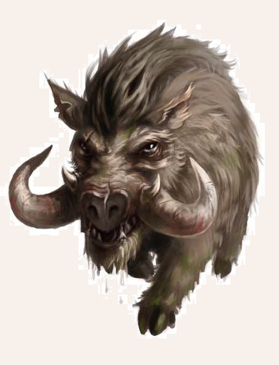

Aventurische Wildschweine sind bei den Bauern und Jägern vieler Regionen gefürchtet. Sie verhalten sich Zweibeinern gegenüber oft aggressiv und noch dazu vermehren sie sich unglaublich schnell, sodass sie zu einer regelrechten Plage werden können. Viele Wildschweine fühlen sich schon durch das bloße Eindringen in ihr Revier gestört. Sie versuchen ihren Gegner durch Rammangriffe zu Boden zu werfen und ihn anschließend mit weiteren Stößen und Bissen zu vertreiben. Einige Sagen berichten sogar von Riesenwuchs unter den Wildschweinen. Diese großen Exemplare gelten als besonders gefährlich, und schon so mancher Held wurde berühmt, weil es ihm gelang, ein solches Riesenwildschwein zur Strecke zu bringen. Goblins bilden Wildschweine gelegentlich als Reitwildschweine aus, auf denen sie in den Kampf ziehen.

Wildschwein
Größe: 1,00 bis 1,20 Schritt lang
Gewicht: 200 bis 250 Stein
Eigenschaften:
MU 15
KL 13
IN 12
CH 10
FF 11
GE 10
KO 15
KK 15
LeP: 35
AsP: -
KaP: -
INI: 11+1W6
SK: -2
ZK: 2
GS: 10
VW: 5
Biss und Stoß:
AT: 15
TP: 1W6+4
RW: kurz
Rammen:
AT: 13
TP: 1W6+3
RW: kurz
RS/BE: 0/0
Aktionen: 1
Vor- und Nachteile: Herausragender Sinn (Geruch)
Sonderfertigkeiten: Zu Fall bringen (Rammen)
Talente:
Klettern 0 (15/10/15),
Körperbeherrschung 4 (10/10/15),
Kraftakt 7 (15/15/15),
Schwimmen 4 (10/15/15),
Selbstbeherrschung 4 (15/15/15),
Sinnesschärfe 4 (13/12/12),
Verbergen 4 (15/12/10),
Einschüchtern 1 (15/12/10),
Willenskraft 4 (15/12/10)
Anzahl: 1 oder 1W3+3 (Rotte)
Größenkategorie: mittel
Typus: Tier, nicht humanoid
Kampfverhalten: Wildschweine reagieren schnell aggressiv.
Wer sich ihnen bis auf 10 Schritt nähert, wird angegriffen.
Dabei attackiert das Wildschwein mit seinen Hauern und seinem gesamten Körper und führt Rammangriffe aus.
Erst danach geht es zum Beißen und Stoßen über.
Wildschweine kämpfen solange, bis ihr Gegner tot ist (1-2 auf W6), brechen den Kampf nach 1W6 KR ab (3-4 auf W6) oder kämpfen, bis sie 50% ihrer Lebenspunkte verloren haben (5-6 auf W6).
Flucht: Verlust von 50% der LeP; bzw. siehe Kampfverhalten
Beute: 100 Rationen Fleisch, Fell (10 Silbertaler), Trophäe (Hauer, 5 Silbertaler)
Jagd: -1
Sonderregeln: Riesenwildschwein: Gelegentlich kommen weit größere Exemplare vor.
Das Riesenwildschwein entspricht seiner kleineren Version, mit folgenden Modiikatoren:
+3 KO, + 3 KK, +15 LeP, + 2 ZK, +2 TP, +1 RS, Größenkategorie groß, Kraftakt 10, Beute 200 Rationen Fleisch, Trophäe (Hauer, 30 Silbertaler);
Die Größe und das Gewicht erhöhen sich um 10 bis 20%.
| LeP-Verlust | Schmerz | |
|---|---|---|
| 28 LeP (¾) | +1 Schmerz | |
| 18 LeP (½) | +1 Schmerz | |
| 9 LeP (¼) | +1 Schmerz | |
| 5 LeP und weniger | +1 Schmerz |
| Tierkunde | (Wildtiere) | |
|---|---|---|
| QS1 | Wildschweine reagieren aggressiv, wenn man ihnen zu nahe kommt und sie gerade Nachwuchs haben. Besonders ausgehungert oder in der Brunftzeit können sie gefährlich werden. | |
| QS2 | Sie sind unberechenbar. Manchmal liehen sie einfach während eines Kampfes, manchmal verhalten sie sich wie Berserker und greifen ohne Unterlass an. | |
| QS3 | Man darf Wildschweine nicht unterschätzen. Sie sind ausgesprochen zäh und halten selbst mit starken Verletzungen eine lange Zeit durch. |